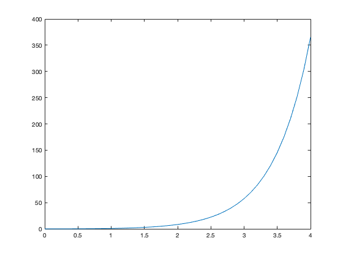

Contents
Euler's Method
Citation: https://www.mathworks.com/matlabcentral/answers/278300-matlab-code-help-on-euler-s-method Initial conditions and setup
h = 0.1; % step size x = 0:h:4; % the range of x y = zeros(size(x)); % allocate the result y y(1) = 0; % the initial y value n = numel(y); % the number of y values % The loop to solve the DE for i=1:n-1 f = x(i)+2*y(i); %the expression for y' in your DE y(i+1) = y(i) + h*f; end x y plot(x,y)
x =
Columns 1 through 7
0 0.1000 0.2000 0.3000 0.4000 0.5000 0.6000
Columns 8 through 14
0.7000 0.8000 0.9000 1.0000 1.1000 1.2000 1.3000
Columns 15 through 21
1.4000 1.5000 1.6000 1.7000 1.8000 1.9000 2.0000
Columns 22 through 28
2.1000 2.2000 2.3000 2.4000 2.5000 2.6000 2.7000
Columns 29 through 35
2.8000 2.9000 3.0000 3.1000 3.2000 3.3000 3.4000
Columns 36 through 41
3.5000 3.6000 3.7000 3.8000 3.9000 4.0000
y =
Columns 1 through 7
0 0 0.0100 0.0320 0.0684 0.1221 0.1965
Columns 8 through 14
0.2958 0.4250 0.5899 0.7979 1.0575 1.3790 1.7748
Columns 15 through 21
2.2598 2.8518 3.5721 4.4465 5.5058 6.7870 8.3344
Columns 22 through 28
10.2013 12.4515 15.1618 18.4242 22.3491 27.0689 32.7426
Columns 29 through 35
39.5612 47.7534 57.5941 69.4129 83.6055 100.6466 121.1059
Columns 36 through 41
145.6671 175.1505 210.5406 253.0187 304.0024 365.1929
 Solve 1st order linear ODE symbolically
Citation: https://www.mathworks.com/help/symbolic/solve-a-single-differential-equation.html
syms y(t) ode = diff(y,t) == t+2*y; % diff(dependent, independent) ySol(t) = dsolve(ode) %With initial condition cond = y(1) == 0; ySol(t) = dsolve(ode,cond)
ySol(t) = (C5*exp(2*t))/4 - t/2 - 1/4 ySol(t) = (3*exp(2*t)*exp(-2))/4 - t/2 - 1/4